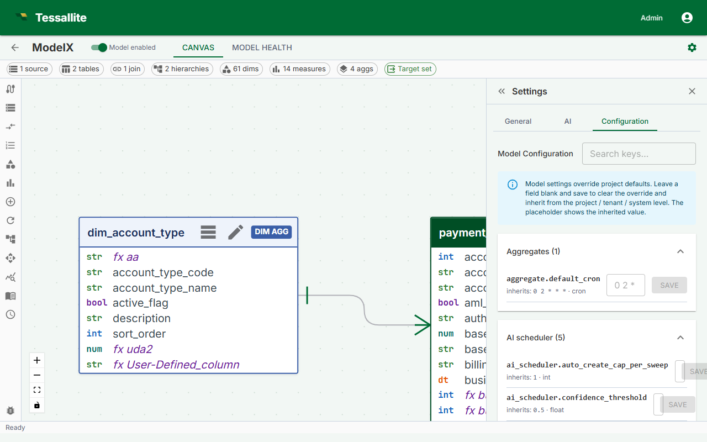

Model Configuration

What this covers
The Configuration sub-tab inside the Model Builder Settings panel lets you override per-model knobs that only make sense for an individual model. It is laid out as five focused tabs — Aggregates, AI Optimizer, Pocket, Predictive, Limits — so a modeller can tune the parts of the cube that matter without scanning a wall of unrelated settings.
Where to find it
- Open the Model Builder for the model you want to configure.
- Click the Settings icon in the toolbelt (right side).
- Switch to the Configuration sub-tab. It is the last tab in the Settings panel and is only available while a model is open.
How overrides work
Every row is a pure override. The placeholder shows the value currently inherited from the project level, which itself may fall back to system defaults. Save a value to override; leave the field blank and click Save, or click Clear, to remove the override and inherit again. The resolver walks model → project → system → registry default and returns the first non-null value, so a model override only applies to that single model.
The five tabs
Aggregates
Per-model defaults for the materialised aggregate pipeline:
- Default aggregate cron — applied to a new aggregate on this model when no explicit schedule is set.
- Refresh window and timeout — bounds the scheduler's per-aggregate run.
Override these when a single model has unusually heavy aggregates that need a slower cadence than the project's other models.
AI Optimizer
Knobs for the optimiser sweep that proposes new aggregates on this model:
- Cron — when the optimiser runs.
- Lookback hours — how far back the optimiser reads telemetry to pick candidates.
- Max creates per run and auto-create cap per sweep — upper bounds on what the optimiser can materialise unattended.
- Confidence threshold — recommendations below this are dropped.
Override these when a model has a different signal density than the project default — high-traffic models often want a tighter cron and a higher cap; low-traffic models can run with a longer lookback.
Pocket-table behaviour for this model:
- Tenant-scoping defaults, refresh cadence, and the allowed refresh policies.
Override only when the model has a tenant-shape that differs from the project's other models.
Predictive
Predictive-aggregate generation for this model — promotion thresholds, retention horizon, and which models seed candidates. Override per-model when the model's measure set or query mix justifies a different policy.
Limits
Per-model ceilings (aggregate count, row count, retention). All limits default to "no cap"; leaving the field blank means the system enforces no model-specific limit. Override when one model needs a stricter quota for cost or compliance reasons.
Inheritance preview
Each row's caption reads Inherits: <value> and shows the value the resolver would return if the override were cleared. When you save a value, the row gets an "Overridden" chip and the input now drives the resolver. Clearing returns the row to the inherited state immediately — there is no soft-delete, no draft state.
Best practices
- Override late. Start with project-level defaults. Only push a setting to the model level when telemetry shows the model behaves differently from its peers.
- Document why. When an override survives a code review, leave a one-line note in the model's description so the next modeller does not "tidy it up" to match the project default.
- Watch for drift. If three or four models in the same project carry the same override, lift it to the project level and clear the per-model rows.
Common pitfalls
- Treating limits as recommendations. A blank limit means no cap, not "use the system default". If you want a default cap, set it at the project or system level.
- Setting an aggregate cron that conflicts with the optimiser. A model whose
aggregate.default_cronruns at the same minute asai_scheduler.croncan starve the scheduler of capacity. Stagger them. - Tuning the confidence threshold without a baseline. The threshold is meaningful only against a stable telemetry base. If you have just published the model, leave it inherited until you have a week of usage data.